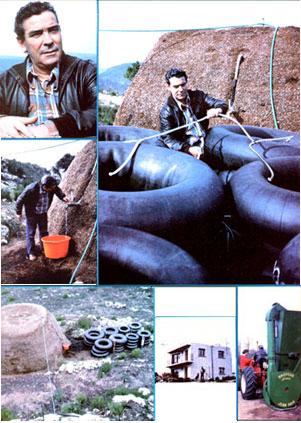
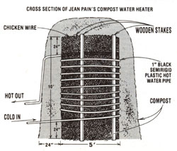
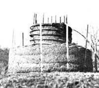

The warm, dry, and rocky Provence region of France is better known for its resorts than for its suitability to gardening. Yet-among that area's craggy hills-a self-taught organic gardener, forester, and biotechnologist named Jean Pain is working wonders with a new technique of composting. By removing underbrush from his woodlands and pulverizing it in a shredder of his own design, M. Pain fertilizes his incredibly prolific gardens, heats his house with the warmth created during the decomposition of the woodwaste, and even runs his car on the biogas produced in a methane digester which also accepts the shredded brush.
A few months ago one of MOTHER's staffers visited Jean and Ida Pain at their home in France, and discussed the techniques which the inventive agronomist has developed to overcome the hardships of the impoverished native soil and become self-sufficient . . . while restoring the ravaged forests of their area to a lushness that the region hasn't known for centuries. Since Jean's research is so extensive and varied, we've decided to relate just one portion of it in this article . . .
The manual labor involved in composting-if one is working exclusively to produce fertilizer for crops-tends to become prohibitive on any large scale. Therefore, the techniques for the construction of heat-producing piles with weights of up to 200 tons-like those the Pains are experimenting with-are somewhat different and more mechanized than the methods used for a simple garden compost heap. (However, Jean stresses that-despite all the necessary mechanization-the effects of applying the following information hold great potential for individual reforestation and localized energy production anywhere in the world.)
As M. Pain explained it, there are three basic steps in the preparation of the material needed for energy-producing compost piles.
[1] Thicket-trimming: While removing brush from forested areas (the Pains gather their "raw material" in such a manner), it's important always to consider the balance of ecological systems. Proper brush trimming encourages the growth of healthy trees, and at the same time maintains ample wildlife habitat and protects the woodland from the threat of fire. Depending upon the climate and soil in any given area, it's often possible-Jean has found-to remove about 15 tons of undergrowth from each acre of land every year . . . and the process will provide the remaining saplings with sufficient sunlight to grow straight and tall.
[2] Shredding: Since the underbrush that's collected may reach diameters of up to four inches, relatively heavy-duty machinery is necessary to shred the wood. Jean prefers a cutter that produces slivers rather than chips . . . since water penetrates the surface of along thin fragment more easily than it does blocky chunks. Though the shavings may be as much as an inch long, the ideal thickness is about 1/16 of an inch.
[3] Saturation: M. Pain claims that a cubic yard of brush can-under ideal conditions-absorb and retain about 140 gallons of water . . . if the pile is progressively stacked and soaked over the course of three days. Water must be added to the layers at least once every 4 inches, but watering at 2-1/2-inch intervals will give the best results. In addition, since a certain amount of liquid will filter through the stack, a trough must be built to collect all the excess moisture so that it can be sprayed back onto the heap.
OPERATION
Any thermal compost pile-Jean explained-can be sized according to the demand for heat that is anticipated. We'll discuss, then, a heap built from about 16 tons of clippings. This happens to be equivalent to the amount of brush that can be removed from an average acre of timber during a year of normal stewardship . . . and such a pile also produces the right amount of humus to add to an acre of land that's to be used for growing cereal grains.
After the twigs from such an area have been shredded, they'll form a mound about 10 feet wide, 10 feet high, and 15 feet long . . . with an average density of about 20 pounds per cubic foot. However, the process of saturation may bring the poundage up to nearly 60, and the final density will still be in the range of 40 pounds per cubic foot. (Jean has found that the piles usually finish decomposing by the eighteenth month . . . but he tests the materialby crushing a chip between his fingers-to be sure the compost is ready for field and garden use at that time.)
While composting goes on, the bacterial activity within a pile produces a considerable amount of heat . . . averaging about 140°F in most instances. Thus it is possible to tap a significant source of thermal energy by intertwining heat-exchanging pipes throughout the interior of the stack.
Jean's early research consisted of laying 1" black polyethylene semirigid pipe in a serpentine pattern within the rectangular heaps . . . in either a vertical or horizontal array. While the horizontal arrangement proved to be easier to assemble, the vertical approach was considerably easier to take apart once decomposition was complete. Of course, in either case the connections in the plastic pipe must be secure . . . since a leak will be hard to notice within the heap, and even more difficult to repair . . . without completely disassembling the pile.
A COMPOST WATER HEATER
Once the Pains' theories about the heat production capacity of compost piles had been borne out by actual experience-and they were getting enough hot water to keep a 1,000square-foot home warm-they then concentrated on improving the overall efficiency of their heat capture system. One obvious way to minimize heat loss to the atmosphere was to build the piles in a circular fashion . . . which offered less surface area for a given volume. Furthermore, such an approach promised to simplify both the assembly and the tearing down of the heaps.
The basis of Jean's cylindrical compost pile is some sort of tower-built from chicken wire, for example-which will hold the inner brush in place. One example incorporates a retainer five feet in diameter and ten feet tall. Once the tower has been filled with brush clippings, 1" black polyethylene semirigid pipe is wrapped around th e structure . . . starting two feet from the bottom, with spirals spaced every six inches, and ending about two feet from the top. The pipe is tied to the tower at its points of entry and exit, and wound tightly enough in between to stay firmly in position.
A two-foot-thick layer of composting material is then packed around and atop the tower and pipe . . . with the ends of the tubing protruding, of course. The intake and exhaust ends of the pipes should be connected to form a closed loop running to and from the building being heated.
A QUICK AND EASY HOT AIR SYSTEM
Jean also pointed out that one way to get around the complexity and expense of using water pipes and radiators is to heat air in a thermal pile. The technique works quite well if the heap can be located close enough to the point of use to eliminate any need for extensive lengths of ductwork and the associated expense and heat loss.
Jean constructed an experimental air heaterto serve a 70-square-foot drying shed-from a pile of about 425 cubic feet. Three levels of sixinch heat duct were set into the compost, with the entry and exit pipes going directly into the building. Circulation is handled by convection, and Jean's records show that the temperature inside the dryer has remained at 125°F for over eight months.
BRUSH GAS
It has been known for some time, and documented by experts such as Ram Bux Singh , that methane gas can be produced from cellulose in the absence of air. Methanogenic bacteria thrive on the carbon and nitrogen in pulverized wood, and leave carbon dioxide and methane (CH.) as waste products. However, the microbes work best at about 98°F . . . and therefore require heat augmentation (in most climates).
The compost-pile heating method is ideally suited to meet this need, since a biogas digester can easily be enclosed in a heatproducing heap. Jean Pain has ex perimented with a digester employing a tightly sealed four-cubic-meter vat wrapped with 1" polyethylene pipe. Water is circulated through the pipe to cool the vat when the warmth developed by the compost becomes excessive. Thus, heated water is also a by-product of the process.
In addition, a thermometer is placed in the top of the vat for monitoring the interior temperature, and a length of copper tubing runs from the vat to a series of rubber inner tubes which serve as gas storage space. [EDITOR'S NOTE: In working with methane, it's imperative that proper precautions against leakage be taken . . . since the confined fuel can be very explosive when mixed with a small amount of air.]
After 71 days of digestion, Jean's biogas plant produced nearly 3,750 cubic feet of gas with a heating value of almost 450 BTU per cubic foot. The 50 cubic feet of fuel available each day was used to feed appliances in the house, and to power the Pains' little Citroen 2CV truck.
FUTURE POSSIBILITIES FOR BRUSH COMPOST HEAT
Jean and Ida Pain hope that future work with brush composting will result in localized technologies that will return more land to small farming . . . and enable more people to make a living from the soil. In an era in which the survival of the small farmer is threatened by the continual escalation of petroleum-basedfuel costs, alternative energy schemes like M. Pain's do, indeed, offer a potential salvation for independent agriculturists . . . who have been the basis of our species' existence here on earth since our beginnings.
MOTHER'S EXPERIMENTS WITH COMPOST HEAT
When MOTHER's research staffers heard about the Jean Pain compost waterheating technique, they immediately decided to build an experimental bioheater out on the Eco-Village property. However-since our shredder isn't set up to produce the thin wood slivers described by Jean-we had to change the heap design slightly to suit our own situation.
MOTHER's resource manager, Larry Hollar, built the pile by erecting a sixfoothigh, five-foot-diameter tower from chicken wire and bamboo, and alternating four-inch layers of wood chips with oneinch layers of manure (to "trigger" the decomposition). Each stage of stacking was followed by thorough saturation with water . . . to achieve a humidification of 40-50%.
After filling the interior of the cylinder with composting material, Larry wrapped 1" semirigid hot water pipe around the column ... starting at ground level and spacing 10 coils seven inches apart. Then the entire assembly was packed with two and a half feet of the four-parts-cellulose, one-part-manure mixture-on top and around the sides of the column-and wrapped in black plastic to capture solar heat.
While our test mound really hasn't had time to demonstrate its full potential, the interior temperature has already worked its way up to 116°F. Water retained inside the pile reaches 112°F, while a two-gallon-per-minute flow yields 85°F liquid . . . and we're using ground water that enters the heap at a chilly 48°F.
Once the oversized wood chips that we were forced to use get into fullswing decomposition, we're confident that the temperature of the water heater will rise significantly . . . perhaps to the 140°F Jean gets from his heaps.
But in the meantime, our tiny five-ton pile is showing tremendous potential, and we've got some more ideas to get to work on. A shredder that will produce slivers to M. Pain's specifications is in the planning stages . . . and our research team wants to try incorporating an actual hot water tank in the middle of a heap. We'll keep you posted on progress with this revolutionary waste heat management technique ... because, as Jean says, "Now is our last c hance."
|
 Counterclockwise from top left: Pain has worked within the balance of nature to become self sufficient. |
 MOTHER's prototype compost heater. |
 |